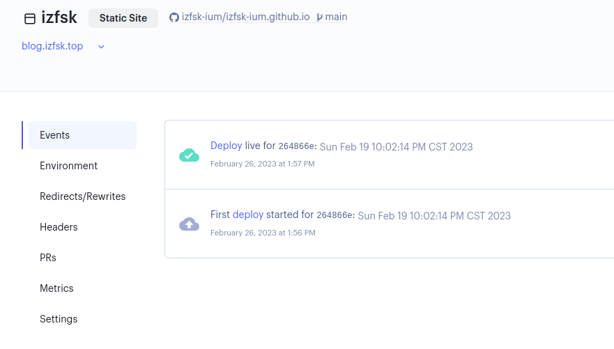
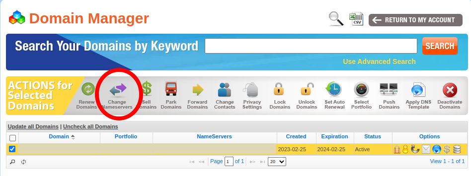
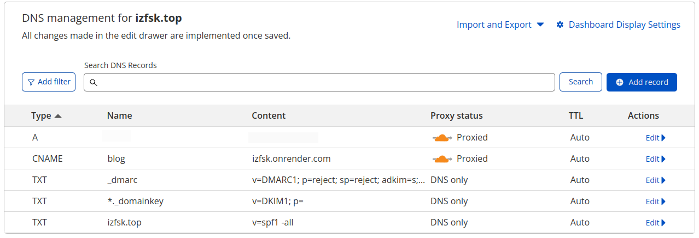

本站进行了一次迁徙，其实也不能说是完全的「迁徙」，但不管怎么样，现在可以使用自己的域名，而不是托管使用 github.io 的子域名了。除此以外，部署方式也作了修改，不再使用中国境内访问慢吞吞的 Github Pages 而采用 render.com 提供的部署服务，同时也套上了 Cloudflare。总之，除了域名费用以外并没有花其他的钱。这篇文章记录一下整个的流程。
域名的选择和购买
购买域名的第一注意事项：不要使用中国的域名注册商家或者购买由中国的公司/组织管理的顶级域名。这样做纯粹是为了避免麻烦，主要是不可预期的政策风险和及其复杂的备案流程。即使你像我一样只是一个遵纪守法的好公民，这一整套流程下来，钱和精力都要耗费不少。具体的来讲，首先不要购买 .cn 的域名，其次不要选择中文域名，最后，在其他域名之间选择时，记得先去 ICANN Wiki 查询一下你要购买的顶级域名的管理者到底是何方神圣，省得后悔。比如，本站的新域名的顶级域名 .top 就是一家江苏省的公司管理的，这也是我购买以后才发现，真是后悔不迭。
其次，要注意「第一年价格」和「续费价格」，有的域名第一年很便宜，但之后续费就飙升到几十乃至上百美元，另外还需要注意各种附加服务，提防不小心选择到自己不需要的东西。
我选择的域名注册商家是 Namesilo，主要原因是它支持支付宝支付。选择和购买很简单顺畅，毕竟没有一个商家会在用户付款的路上添堵。然而，相比于它现代的选择购买界面：

它的后台管理界面似乎让你回到了 15 年前：

以至于我第一次进入时以为自己被什么野鸡商家骗了钱（
接下来在右边第二个「Domain Manager」里面确认你的域名即可。

Render
Github Pages 其实已经很好了，但是由于众所周知的原因，中国境内访问它时不时会被阻断和劣化。所以需要另外一个部署服务来「加速」。有不少教程推荐使用 Netlify，但是它很荣幸的在我所在的区域被 reset 了。所以我选择其他替代方案。
其实这些服务，Netlify 也好，Render 也好，对于我这样的用户来讲都是大同小异的。我用不到复杂的功能，只是作为一个静态站点同步和部署来用。
直接在这里注册登录，如果使用 Github 登录，可以直接快捷的绑定 repo。选择创建一个新的 Static Site，然后点击右侧的 「Configure account 」绑定 Github 帐号里面的相应 repo 点击 Connect 即可。

然后就是配置。你需要起一个名字，它同样是一个二级域名：*.onrender.com。不过既然接下来要自定义域名这个也无关紧要。我的站点是完全本地生成后 push 到仓库的，所以没有 Build Command，Publish directory 则是根目录 ./。默认情况下每一次对源 repo 的 push 都会触发一次更新，不需要手动设置。

接下来是等待部署。等到部署完成后，就可以访问了。同时，状态变成这样：

此时可以访问 name.onrender.com 访问了。这种情况下它相当于是一个类似 Github Pages 但是略微加速。
Cloudflare
使用它不仅仅是出于防止 DDOS 或者的考虑，毕竟 CDN 能减速。其实这反而是次要的考虑。要使用 Cloudflare ，首先需要把域名的 nameserver 转移到 Cloudflare 那边去。Cloudflare 注册以后会有一个向导，一步一步来就行了。主要是 namesilo 那边。你需要先勾选复选框，再点击：

然后把原来的删除，添加 Cloudflare 给你的：

接下来是 CF 这边，DNS 缓存的全球更新需要一点时间，所以需要等一会儿。接下来就是设置解析地址，点到你的域名，DNS 设置里面添加。DNS 记录可以理解成一个 K-V 对，主要需要知道的三种记录类型：
- A : 域名 -> IPv4 地址
- AAAA : 域名 -> IPv6 地址
- CNAME : 域名 -> 另外一个域名
添加好相应的域名即可。注意在导入站点的时候，会发现有几条不认识的 A 记录，那是 Namesilo 的广告页面，删掉就行。添加 A 记录可以使用中国境内的 VPS 地址也可以正常访问，但是有合规性风险，不建议尝试。「要么全是(中国)境外，要么全是(中国)境内」，不要混着来。

所以，访问 blog.izfsk.top 就会相应的跳转到 izfsk.onrender.com 那边去。但是，此时还是不能够正常使用，因为 Render 那边的 Custom Domains 还没有设置。回到 Render 的 Dashboard 里面找到你的项目，在 Settings 里面，添加自定义的域名即可。需要等待一会儿 DNS 刷新以及 Render 处理证书。最后的状态是这样的：

那么就大功告成啦！
其实 Render 还支持免费(有大小和时间限制的) PostgreSQL 服务和 Web Service 服务，完全可以折腾一下搞一个评论功能，把白嫖进行到底（